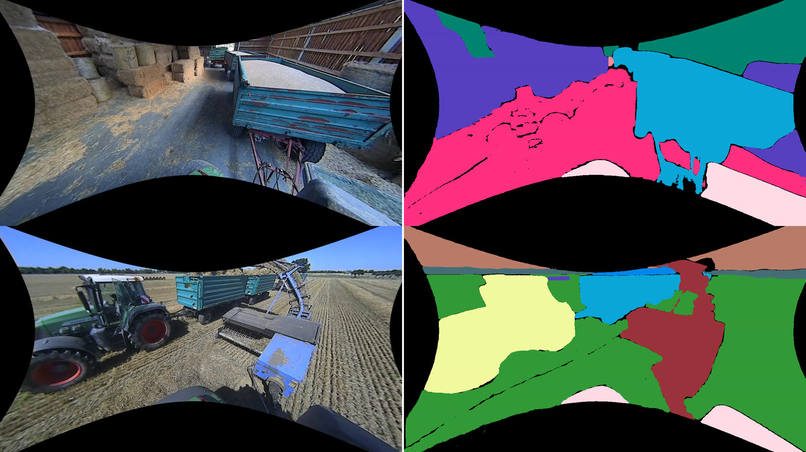
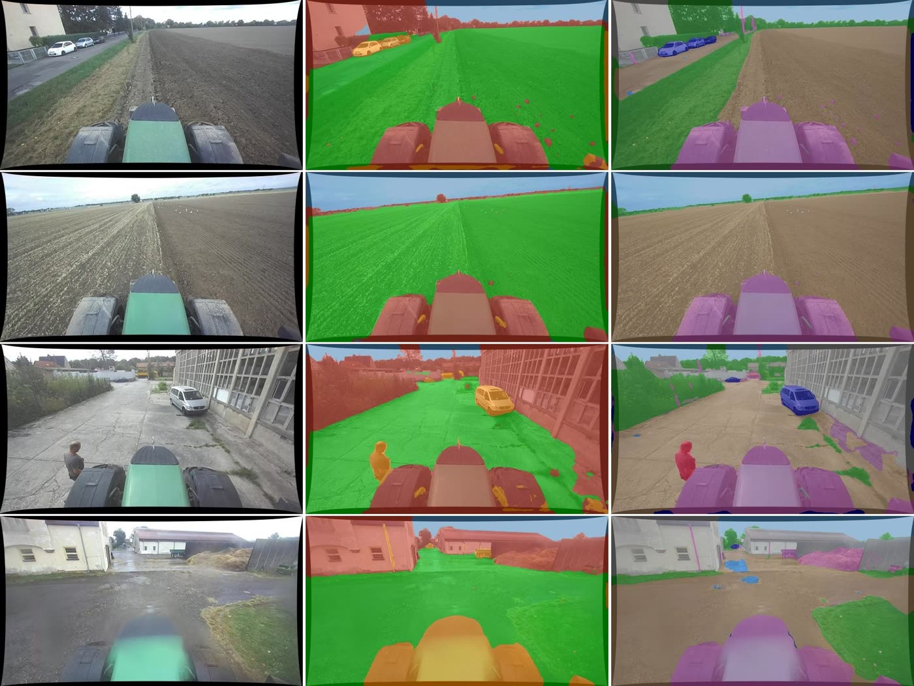

Openly available data for agricultural autonomy – especially for large machinery like tractors – is still scarce. We publish datasets, ontologies and baselines recorded during real farm work.
Our Fendt 724 Vario records raw multi-modal sensor data during routine operations on the research farm of Leipzig University (Lehr- und Forschungsgut Oberholz): plowing, tilling, cultivating, mowing and baling. These recordings are the basis for all datasets and methods below.
Currently spring and summer operations; we are expanding to further seasons, crops, growth stages and tasks such as planting, harvesting and fertilizing. Details on the sensor kit: Full Perception Integration.
Large-scale datasets have advanced urban autonomous driving and are expanding into off-road domains, yet openly available data for agricultural machinery is still missing. LOAM-D closes this gap with 1,512 human-annotated images from seven roof-mounted wide-angle cameras, covering paved farmyards and open fields. Its 121-class ontology extends the off-road GOOSE taxonomy with agriculture-specific categories such as tillage states, farm equipment and implements, enabling model and data transfer between both datasets.

| Model | Trav. mIoU | C-12 mIoU | C-12 FW-IoU |
|---|---|---|---|
| PIDNet-S (real-time) | 84.53 | 31.71 | 73.49 |
| SegFormer-B4 | 92.12 | 34.96 | 76.04 |
Trained on human labels plus SAM-3 autolabels. Trav. = traversable / non-traversable / obstacle / sky. C-12 = GOOSE top-level categories plus implements.

This paper presents a real-world multi-modal dataset for windrow-following research, recorded during baling operations with tractor-mounted stereo vision, LiDAR and GNSS sensors. Based on this dataset, the work introduces a real-time centroid-based detection pipeline running at more than 20 Hz on a Jetson AGX Orin and shows strong agreement between stereo and LiDAR measurements in the key 4–10 m guidance range.
We are happy to support benchmarks, joint publications and student projects.